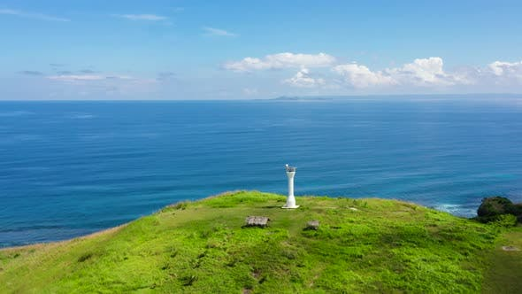
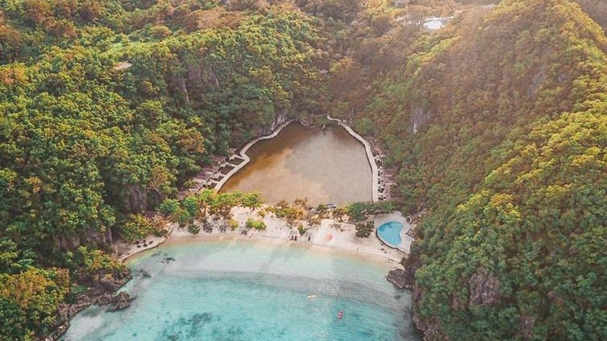

Very little is known about Caramoan, isolated from the rest of Camarines Sur.
It is no surprise why Philippine's Secret Paradise remains unexploited from commercial tourism.
Caramoan gives 'island hopping' a new meaning. Enjoy its beauty in many ways.
Great ocean adventure for kayakers, snorkle and scuba dive to experience the diverse marine life, trek and search for
the enigmatic lagoon, rock climb the limestone cliffs, explore the caves or just star gaze at night.
The Caramoan peninsula possesses an array of majestic natural wonders,
where you can get up close and feel the serenity of nature.
It's the perfect place for your dream vacation getaway.


Our purpose is to share the hidden paradise of Caramoan Islands to everyone.
NaCopyright-SampleOnly